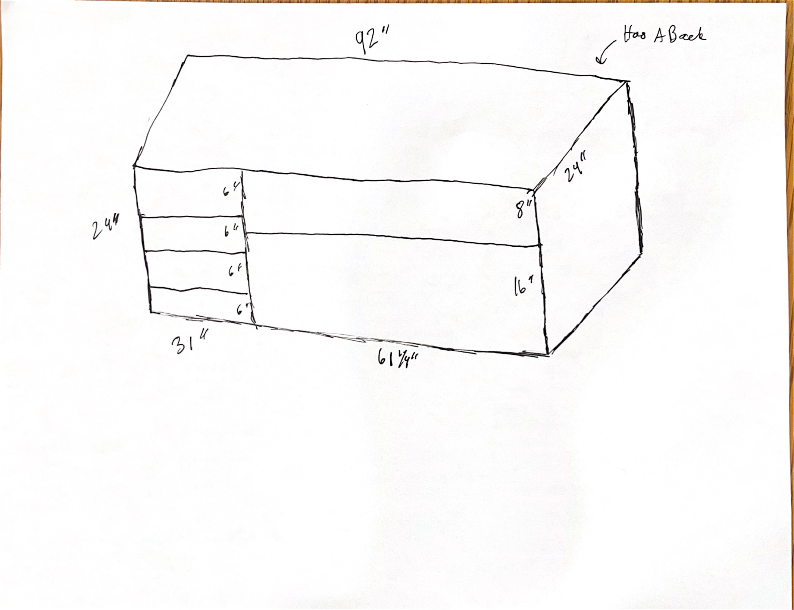
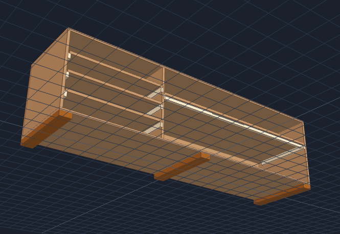
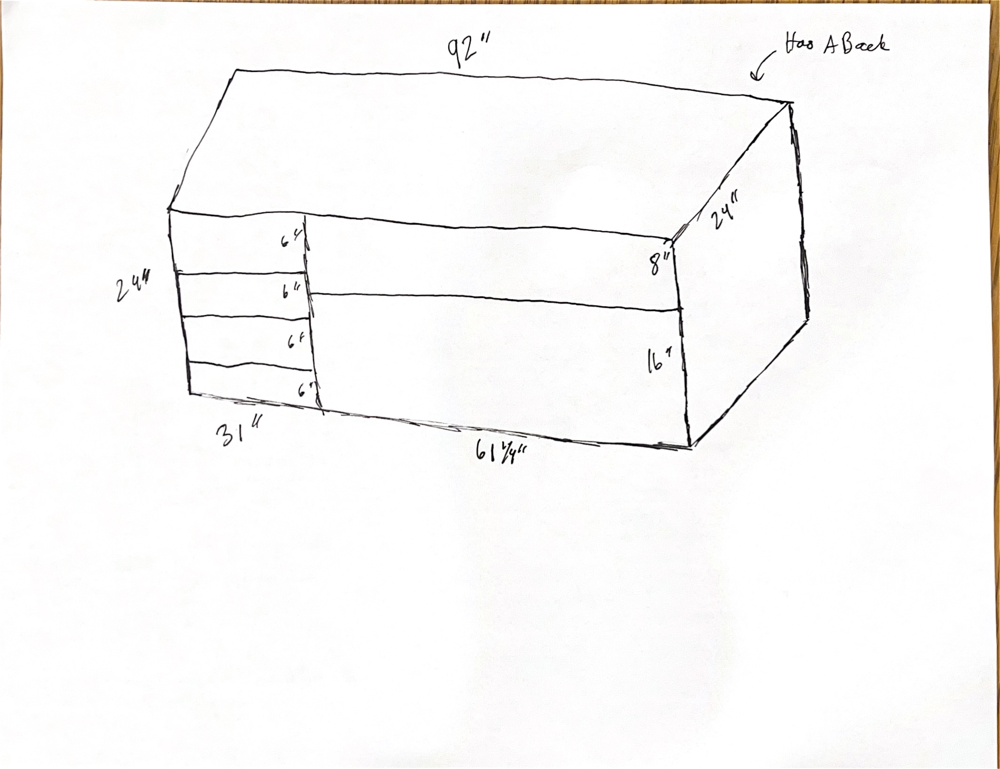

Complete Step-by-Step Assembly & Build Guide
For handover to any builder. Follow each step in order with clear part identification, glue application points, and fastener specifications.

| Qty | Item | Use (Parts) |
|---|---|---|
| 3 Sheets | 3/4" × 4' × 8' Sanded Plywood (BCX or Sandeply Birch) | P1, P2, P3, P4, P5, P6, P7, P8 |
| 2 Boards | 1" × 2" × 8' Select Pine Board | P9 (Stiffener), P10 (Cleats) |
| 1 Board | 2" × 4" × 8' Construction Pine Board | P11 (Base Skids) |
| Qty | Item | Specification & Use |
|---|---|---|
| 1 Bottle | Titebond II Wood Glue | 16 oz - Primary bonding for ALL wood-to-wood joints (80%+ strength) |
| 1 Box | 2" #8 Star-Drive Wood Screws | STRUCTURAL: P11 to P2, P1 to vertical panels, P2 to vertical panels. Use with countersink. |
| 1 Pack | 1.25" - 1.5" Finish Nails (or 1.25" Wood Screws) | SECONDARY: P10 cleats to walls, P9 to P7, shelves to cleats (3 per cleat) |
| 1 Pack | 1.5" - 2" Finish Nails (or 1.625" Trim Screws) | HORIZONTAL: P4, P5, P6 through to shelf edges (2-3 per shelf) |
| 1 Pack | 1" - 1.25" Brad Nails (or 1" Wood Screws) | BACK PANEL: P3 mounting around perimeter & center divider (every 6-8") |
| 1 Bit | 82° Countersink Drill Bit (1/2" for #8 screws) | Pre-drilling pilot holes & recessing #8 screw heads flush into plywood |
| 4 | Bar Clamps or C-Clamps (18"-24" capacity) | Hold assemblies square while glue cures. Essential for P9→P7, P11→P2, panel alignment. |
| 4 | Spring Clamps or Quick-Grip Clamps (12" capacity) | Lightweight clamping for shelf-to-cleat joints and back panel alignment during fastening. |
| Qty | Item | Purpose |
|---|---|---|
| 1 Quart | Latex Wood Primer | Seals plywood edges & surfaces (Mandatory) |
| 1 Gallon | Semi-Gloss or Gloss Interior Enamel Paint | Chemical-resistant body finish (Mandatory) |
| 1 Quart | Water-Based Polyurethane (Clear) | Protective top coat for shelves (Optional) |
| 1 Pack | 120-Grit Sandpaper + Foam Rollers & Brushes | Sanding & paint application (Mandatory) |
| Part ID | Part Name | Qty | Material | Dimensions | Location & Function |
|---|---|---|---|---|---|
| P1 | Top Panel | 1 | 3/4" Plywood | 92" × 23.25" | Top exterior cap (horizontal) |
| P2 | Bottom Panel | 1 | 3/4" Plywood | 92" × 23.25" | Bottom exterior base (horizontal) |
| P3 | Back Panel | 1 | 3/4" Plywood | 92" × 24" | Full rear panel - provides rigidity & prevents wall mounting |
| P4 | Left Side Panel | 1 | 3/4" Plywood | 22.5" × 23.25" | Left outer wall (vertical) |
| P5 | Right Side Panel | 1 | 3/4" Plywood | 22.5" × 23.25" | Right outer wall (vertical) |
| P6 | Center Divider | 1 | 3/4" Plywood | 22.5" × 23.25" | Main vertical divider (separates left & right sections) |
| P7 | Long Shelf | 1 | 3/4" Plywood | 60.25" × 23.25" | Single horizontal shelf for right section |
| P8 | Small Shelves | 3 | 3/4" Plywood | 29.5" × 23.25" (each) | Three horizontal shelves for left section |
| P9 | Shelf Stiffener Lip | 1 | 1×2 Pine Board | 56" × 1.5" | Reinforcement under front edge of long shelf (P7) - 2" clearance on each end for cleats |
| P10 | Shelf Cleats | 8 | 1×2 Pine Board | 20" × 1.5" (each) | Support ledges mounted on inside of side/divider walls |
| P11 | Base Skids (Feet) | 3 | 2×4 Lumber | 23.25" × 3.5" (each) | Floor elevation - mounted under bottom panel (P2) for moisture protection |
The stiffener [P9] is a 1×2 pine board mounted under the FRONT edge of the long shelf [P7] to prevent sagging. P9 is 56" long with 2" clearance on each end to avoid cleat interference.

Where the cleats sit inside the cabinet - SIDE VIEW showing front-to-back positioning. Cleats are 20" long and mounted FLUSH at the back. Panel is 23.25" deep, so 3.25" gap at front for shelf overhang.
Shows all 11 parts and how they fit together. Cabinet is 92" wide × 23.25" deep × 25.5" high. Shows BOTH left side (P4) and right side (P5).
FRONT VIEW - Showing P7 with P9 stiffener lip glued and clamped
[P9 Stiffener - 56" × 1.5" × 0.75"]
═══════════════════════════════════════════
(Centered under front edge of P7)
┌───────────────────────────────────────┐
│ [P7] Long Shelf - 60.25" × 23.25" │
│ │ ← P7 glued and clamped to P9
│ │
└───────────────────────────────────────┘
SIDE VIEW - Showing the L-beam formation
P9 (stiffener)
════════════════════ ← 1.5" wide, 0.75" tall
↓
┌──────────────────────┐
│ [P7] │ ← 23.25" deep shelf
│ │
│ │
└──────────────────────┘
This creates an INVERTED L-BEAM under P7:
• Adds 0.75" height to shelf front edge
• Reinforces against sagging in center
• Provides rigid support for lab equipment
RESULT: P7 is now a rigid, anti-sag shelf
✓ P9 and P7 glued with Titebond II
✓ 3 clamps holding tight (front, center, back)
✓ Screws driven to lock in place
✓ Ready for cleats to be mounted
Result: P2 will be elevated approximately 1.5" off the floor, protecting against moisture and chemical spills.
TOP VIEW - Showing P2 (bottom panel) with P11 skids positioned
Front of Cabinet
↓
┌──────────────────────────────────┐
│ │
│ [P2] Bottom Panel: 92" × 23.25" │
│ │
│ ● ● ● │ ← P11 skids (3 total)
│ L C R │ Left, Center, Right
│ │
└──────────────────────────────────┘
↑
Back of Cabinet
SKID POSITIONING (Front-to-Back):
P2 (bottom panel)
┌───────────────────────────┐
│ Front edge of panel │
│ ↓ │
├───────────────────────────┤
│ P11 mounting surface │ ← Each P11 has 4 countersink screws
│ (4 screws per skid) │ (2 front + 2 rear)
│ ↑ │
│ Back edge of panel │
└───────────────────────────┘
BOTTOM VIEW - Showing underside with P11 skids
[P11] [P11] [P11]
Left Center Right
┌─────┐ ┌─────┐ ┌─────┐
│2×4 │ │2×4 │ │2×4 │
│ │ │ │ │ │
└─────┘ └─────┘ └─────┘
↑ ↑ ↑
11.5" 46" 80.5"
(from left) (from left) (from left)
Each P11 skid:
• 23.25" × 3.5" (2×4 lumber)
• 4 countersink screws per skid (12 total)
• Raises cabinet 1.5" off floor for damp protection
• Provides 3-point support for stability
RESULT: Cabinet elevated and stable
✓ P11 skids glued with Titebond II
✓ 12 wood screws holding firmly
✓ P2 sits firmly on all 3 skids
✓ Cabinet won't rock or tip
✓ Ready for vertical frame assembly
FRONT VIEW - Showing vertical panels with cleats at correct heights
LEFT SECTION (P4 & P6 left face) | RIGHT SECTION (P6 right face & P5)
P4 P6 | P6 P5
(Left Panel) (Divider) | (Divider) (Right Panel)
22.5" × 23.25" | 22.5" × 23.25"
Height from bottom:
|
23.25" ─────────────────────────────|─────────────────────
│ |
│ (Top of panel) |
│ |
16.5" ├─ ● ─────────── ● ─ ● ─────|─ ● ─ (P8c top - 16.5")
│ [P8c cleat] [shelf] |
│ |
11.0" ├─ ● ─────────── ● ─ ● ─────|
│ [P8b cleat] [shelf] |
│ |
5.5" ├─ ● ─────────── ● ─ ● ─────|
│ [P8a cleat] [shelf] |
│ |
│ LEFT has | RIGHT has
│ 3 small shelves | 1 long shelf
│ stacked up | centered at 14.5"
│ |
│ (blank below) | 14.5" ├─ ● ─────── ●
│ | [P7 cleat] [P7]
│ |
│ |
0" └─────────────────────────── |─────────────────────
(Bottom of panel) |
CLEAT POSITIONING DETAIL - Side View showing 3.25" overhang
Front Cleat (20" long) Back
Edge ───────────────── Edge
↓ (glued to panel)
3.25" ├──────────────────┤
(gap) │ [P10] │ [Panel back edge]
↕ │ │ ↑
└──────────────────┘ │
3.25" 19.75" 20"
CRITICAL MEASUREMENTS:
Left Section (3 shelves × 3 heights):
• Cleat heights: 5.5", 11.0", 16.5" (from bottom of P4/P6)
• Each cleat: 20" long, flush at back, 3.25" gap at front
• Total 6 cleats (3 heights × 2 panels: P4 + P6 left face)
Right Section (1 long shelf):
• Cleat height: 14.5" (from bottom of P5 and P6 right face)
• Each cleat: 20" long, flush at back, 3.25" gap at front
• Total 2 cleats (P5 + P6 right face)
FASTENING PATTERN - 3 fasteners per cleat
1" 10" 1"
↓ ↓ ↓
┌─●────────●────────●─┐
│ [P10 Cleat - 20"] │
└────────────────────┘
↑ ↑
Left end Right end
(~1" from) (~1" from)
RESULT: Cabinet frame ready for shelves
✓ All 8 cleats securely fastened (6 left + 2 right)
✓ All fasteners driven (24 total: 8 cleats × 3 fasteners)
✓ Glue is tacked and drying
✓ Cleats are perfectly horizontal (checked with level)
✓ Ready to position shelves (Step 4)
BEST PRACTICE: Keep the frame LAID FLAT on a sturdy workbench during shelf positioning. The workbench supports the entire assembly weight, not the freshly-glued cleats. Once all shelves are in place, glued, fastened, and fully cured (30+ minutes), THEN you can carefully stand the whole assembly upright using the cleats for vertical support.
DO NOT: Stand the frame upright immediately after placing shelves on the cleats. The glue is still wet/tacky, and the cleats (fastened only 10-15 minutes prior) cannot yet support the full shelf weight. Wait for 30-minute minimum glue tack time AFTER all shelves are fastened.
LIFTING: When moving the assembly, support it under the workbench or with temporary bracing, not by pulling on shelves or panel edges.
SIDE VIEW - Showing all shelves at their heights with cleats underneath
Height (inches from bottom)
23.25" ┌─────────────────────────────────────┐
│ (Top of cabinet - P1 will attach) │
20" │ │
16.5" │ P8c (top shelf) │
│ ═════════════════════════ │ ← On P10 cleat at 16.5"
15" │ │
│ │
11.0" │ P8b (mid shelf) │
│ ═════════════════════════ │ ← On P10 cleat at 11.0"
10" │ │
│ │
5.5" │ P8a (low shelf) │
│ ═════════════════════════ │ ← On P10 cleat at 5.5"
3.5" ├─────────────────────────────────────┤
│ P11 Base Skids (under P2) │ ← P2 sits on these
0" └─────────────────────────────────────┘
TOP VIEW - Showing shelf arrangement (looking down)
LEFT SECTION DIVIDER RIGHT SECTION
(P4) (P6-left) (P6-center) (P6-right) (P5)
┌─────────────┐ ┌─────────────┐
│ P8c ● │ │ ● P7 │
│(29.5") ─┈┈─┤ ┌────────────────────── ┤─┈┈ (60.25") │
│ 1 x 3 ┈┈┈ │ │ │ ┈┈┈ │
└───────┬─────┘ │ │ ┌───────────┘
│ cleat │ │ │ cleat
│ ├────────────────────────┤ │
└───────┤ [DIVIDER P6 - 22.5"] ├─┘
│ (Separates left/right)│
┌───────┤ Width: 45" left, ├─┐
│ cleat │ 47.25" right │ │ cleat
│ ├────────────────────────┤ │
┌───┴─────┐ │ │ ┌───────┐
│ P8b ● │ │ │ │ P7 │
│(29.5") ──┤─┤ ├─┤(60.25")
│1 x 3 ──┤─┤ ├─┤
└───┬─────┘ │ │ └───────┘
│ │ │
│ ├────────────────────────┤
│ │ │
┌───┴──────┐│ │
│ P8a ● ││ │
│(29.5")───┼─┤ ├──────┐
│1 x 3 ──┼─┤ ├──────┤
└──────────┘│ │
├────────────────────────┤
│ │
└────────────────────────┘
FASTENING SEQUENCE for each shelf:
1. VERTICAL FASTENERS (down through shelf into cleats)
Shelf top surface
● ● ●
↓ ↓ ↓
├─2"─┼─center─┼─2"─┤
└──────────────────────┘
(3 fasteners per shelf)
2. HORIZONTAL FASTENERS (through side panels into shelf edge)
Side Panel
● ● ● ← 2-3 fasteners per side
┃ ┃ ┃
├──┴──┴──┐
│ Shelf │
│ Edge │
└────────┘
CRITICAL CHECKS BEFORE FASTENING:
✓ Shelves are perfectly level (check with spirit level)
✓ All shelves sit fully on cleats (no gaps or cantilever)
✓ Left and right shelves are same height (no rocking)
✓ No shelves are twisted or warped
✓ 3.25" overhang is maintained on all shelves
✓ P7 and P8 parts don't interfere with each other
RESULT: Cabinet has complete shelf assembly
✓ All shelves in correct positions
✓ All fasteners driven (vertical + horizontal)
✓ Glue is setting (30-minute cure before loading)
✓ Cabinet is fully rigid horizontally
✓ Ready to attach top (P1) and bottom (P2) panels
P1 rests directly ON TOP of the three vertical panels:
• P1 (92" wide × 23.25" deep × 3/4" thick) sits on the TOP EDGES of P4, P5, and P6
• The three vertical panels are standing upright at 22.5" height
• Glue is applied to the TOP SURFACE/EDGE of each vertical panel
• P1 is laid flat on top, creating a sandwich joint
• Clamps hold P1 down firmly while glue tacks (wet/tacky stage)
• Wood screws then lock the connection permanently
CROSS-SECTION VIEW - How P1 sits on the three vertical panels
P1 (Top Panel - 92" × 23.25")
████████████████████████████
Glue layer → ════════════════════════════ ← 1/4" bead
P4 (Left) P6 (Center) P5 (Right)
┌─────────┐ ┌─────────┐ ┌─────────┐
│ 22.5" │ │ 22.5" │ │ 22.5" │
│ height │ │ height │ │ height │
│ │ │ │ │ │
└────┬────┘ └────┬────┘ └────┬────┘
│ │ │
│ │ │
└──────────────┴─────────────────┘
(3 contact points)
Glue is applied to the top surface of each vertical panel
P1 is laid flat on top, creating face-to-face joints
FULL ASSEMBLY SEQUENCE FOR P1 ATTACHMENT:
MINUTE 0 - APPLY GLUE
┌─────────────────────────────────────┐
│ Vertical panels standing upright │
│ on workbench (still laid flat) │
│ │
│ Step 1: Apply 1/4" bead of glue │
│ to TOP EDGE of P4 │
│ ← Continuous bead │
│ │
│ Step 2: Apply 1/4" bead to P6 │
│ │
│ Step 3: Apply 1/4" bead to P5 │
└─────────────────────────────────────┘
TIMING: 1-2 minutes to apply glue
MINUTE 1-2 - POSITION & CLAMP P1
┌─────────────────────────────────────┐
│ Lift P1 (top panel) and position │
│ carefully on top of the three │
│ vertical panels (P4, P6, P5) │
│ │
│ P1 now rests on: │
│ • TOP EDGE of P4 (left panel) │
│ • TOP EDGE of P6 (center divider) │
│ • TOP EDGE of P5 (right panel) │
│ │
│ Step 4: Install 2-3 clamps │
│ • Front edge: 1 clamp │
│ • Back edge: 1 clamp │
│ • (Optional) Center: 1 clamp │
│ │
│ Tighten clamps firmly │
│ → P1 is now pressed down │
│ → Glue creates pressure bond │
│ → P1 cannot move │
└─────────────────────────────────────┘
TIMING: 2-3 minutes to position & clamp
MINUTE 3-12 - GLUE TACKS (Wait with clamps on)
┌─────────────────────────────────────┐
│ [Clamps holding P1 down firmly] │
│ │
│ Glue is CURING: │
│ • Wet stage: 0-5 minutes │
│ • Tacky stage: 5-10 minutes ← Target
│ • Can start drilling: 10 min │
│ │
│ DO NOT move, adjust, or test P1 │
│ DO NOT remove clamps early │
│ │
│ Clamps hold pressure while glue │
│ forms initial bond │
└─────────────────────────────────────┘
TIMING: 10 minutes wait time
MINUTE 12-15 - PRE-DRILL PILOT HOLES
┌─────────────────────────────────────┐
│ [Clamps still on - P1 held firm] │
│ │
│ Step 5: Use 1/8" countersink bit │
│ │
│ Drill 3 holes per panel: │
│ │
│ Through P1 → into P4: │
│ Hole #1: 3" from left end │
│ Hole #2: At center (46") │
│ Hole #3: 3" from right end │
│ │
│ Through P1 → into P6: │
│ Same spacing (3 holes) │
│ │
│ Through P1 → into P5: │
│ Same spacing (3 holes) │
│ │
│ TOTAL: 9 pilot holes │
│ │
│ Countersink bit creates: │
│ • Small pilot hole for screw tip │
│ • Recess for screw head to sit │
│ flush or slightly below surface │
└─────────────────────────────────────┘
TIMING: 3-4 minutes to drill
MINUTE 15-18 - DRIVE WOOD SCREWS
┌─────────────────────────────────────┐
│ [Clamps still on] │
│ │
│ Step 6: Use 2" #8 wood screws │
│ │
│ Drive 3 screws per panel: │
│ │
│ Into P4 (left panel): │
│ Screw #1: At 3" hole location │
│ Screw #2: At center (46") hole │
│ Screw #3: At 3" from right hole │
│ │
│ Into P6 (center divider): │
│ Same 3 screw positions │
│ │
│ Into P5 (right panel): │
│ Same 3 screw positions │
│ │
│ TOTAL: 9 wood screws │
│ │
│ Driving notes: │
│ • Drive slowly, perpendicular │
│ • Screws should sit flush or │
│ 1/16" below surface (will paint) │
│ • Glue is now bonding while │
│ screws lock in place │
└─────────────────────────────────────┘
TIMING: 4-6 minutes to drive all
MINUTE 18+ - RELEASE CLAMPS (After all screws driven)
┌─────────────────────────────────────┐
│ P1 is now LOCKED in place by: │
│ • Glue bond (sandwich joint) │
│ • 9 wood screws │
│ │
│ Step 7: Remove clamps carefully │
│ │
│ P1 will not move - it's │
│ mechanically fastened now │
│ │
│ Glue continues to cure: │
│ • Tack set: 10-30 minutes │
│ • Sufficient for assembly: 30 min │
│ • Full cure: 24 hours │
└─────────────────────────────────────┘
TIMING: 2-3 minutes to remove clamps
═════════════════════════════════════════
TOTAL TIME FOR STEP 5A (P1 attachment):
• Apply glue + position: 3-5 minutes
• Glue tack wait: 10 minutes
• Pre-drill: 3-4 minutes
• Drive screws: 4-6 minutes
• Remove clamps: 2-3 minutes
───────────────────────────
TOTAL: ~25-30 minutes of work
PLUS waiting for full cure before Step 6:
• Minimum 1 hour with clamps off
• Before moving cabinet: 2 hours
• Before loading: 24 hours full cure
KEY POINTS:
✓ Glue bonds the surfaces (main strength)
✓ Clamps hold position while glue tacks
✓ Screws lock joint permanently
✓ Screws prevent racking/twisting
✓ Never skip the 10-minute wait!
✓ Glue must be tacky before drilling
TOP VIEW - Looking down at P1 being clamped to frame
Front of Cabinet
↓
╔═════════════●═════════════╗ ← Front edge clamp (Position #1)
║ ║
║ [P1 TOP PANEL] ║
║ 92" wide × 23.25" deep ║
║ ║
║ P4 P6 P5 ║
║ (L) (C) (R) ║
║ ║
║ [===] [===] [===] ║ ← Shelves below (P7, P8)
║ ║
║ [===] [===] [===] ║
║ ║
╚═════════════●═════════════╝ ← Back edge clamp (Position #2)
↑
Back of Cabinet
CLAMP POSITIONING (2-3 clamps total):
Position #1: FRONT EDGE
• 1 bar clamp or C-clamp
• Place at front overhang of P1 (12-18" from left end)
• Tighten firmly to draw P1 down onto frame top
Position #2: BACK EDGE (RECOMMENDED)
• 1 bar clamp or C-clamp
• Place at back edge of P1
• Balances pressure from front clamp
Position #3 (OPTIONAL): CENTER
• Add 3rd clamp at center (46" mark) if panel bows
• Provides extra support for very long panel
SPACING ALONG 92" LENGTH:
Left end Center Right end
(0") (46") (92")
↓ ↓ ↓
○─────────────○─────────────○ ← Clamp positions
↑ ↑ ↑
Clamp #1 Clamp #3 (opt) Clamp #2
RESULT: P1 is pulled down firmly and evenly
✓ All 3 vertical panel edges (P4, P6, P5) are pressed tight
✓ Overhang is even on all sides
✓ Panel is level and square
✓ Ready for screw fastening after 10-minute glue tack time
KEY DIFFERENCE - P2 is underneath, frame rests on it:
• P2 (92" wide × 23.25" deep × 3/4" thick) sits on the floor (on P11 skids)
• The entire frame (with P1 on top, all shelves inside) is SET DOWN ONTO P2
• Glue is applied to the BOTTOM EDGES of P4, P5, P6
• Frame weight presses down on P2 while glue tacks
• Screws are driven from INSIDE the cabinet, through panel edges, down into P2
• This "sandwiches" the vertical panel edges between the panels
CROSS-SECTION VIEW - How P2 sits under the frame
Frame (P4, P5, P6 + P1 + shelves)
┌─────────────┬─────────────┬─────────────┐
│ │ │ │
│ P4 │ P6 │ P5 │ ← All vertical panels
│ │ │ │
└────┬────────┴────┬────────┴────┬────────┘
│ │ │
│ Glue layer │ Glue layer │ Glue layer
↓ ↓ ↓
════════════════════════════════════════════ ← P2 (Bottom Panel)
92" × 23.25"
┌──────────────────────────────────────────┐
│ P11 Skids (L) P11 Skids (C) P11 (R) │ ← Base support (1.5" above floor)
└──────────────────────────────────────────┘
Glue bonds to the BOTTOM EDGES of P4, P5, P6
P2 is the foundation - frame rests on it
Frame weight + clamps hold everything tight
FULL ASSEMBLY SEQUENCE FOR P2 ATTACHMENT:
MINUTE 0 - APPLY GLUE (After P1 is already attached & cured)
┌─────────────────────────────────────┐
│ Frame is standing upright with: │
│ • P1 already glued & screwed to top │
│ • P4, P5, P6 vertical panels │
│ • All shelves inside │
│ │
│ P2 is on the floor with P11 skids │
│ │
│ Step 1: Apply 1/4" bead of glue │
│ to BOTTOM EDGE of P4 │
│ ← Continuous bead │
│ │
│ Step 2: Apply 1/4" bead to P6 │
│ │
│ Step 3: Apply 1/4" bead to P5 │
│ │
│ Apply to frame EDGES that will │
│ contact the top surface of P2 │
└─────────────────────────────────────┘
TIMING: 1-2 minutes to apply glue
MINUTE 1-2 - POSITION FRAME ON P2
┌─────────────────────────────────────┐
│ Carefully lower/lift frame down │
│ onto P2 (which is already on │
│ P11 skids on the floor) │
│ │
│ Position frame so that: │
│ • P4 bottom edge touches P2 glue │
│ • P6 bottom edge touches P2 glue │
│ • P5 bottom edge touches P2 glue │
│ │
│ The bottom EDGES of the three │
│ vertical panels rest on the top │
│ surface of P2 │
│ │
│ Verify alignment: │
│ • Equal overhang (L, R, front, back)│
│ • P11 skids still positioned │
│ • Cabinet level (use level tool) │
│ │
│ The frame's own weight now holds │
│ it down on P2 │
└─────────────────────────────────────┘
TIMING: 2-3 minutes to position carefully
MINUTE 3-5 - INSTALL CLAMPS
┌─────────────────────────────────────┐
│ Step 4: Install clamps to ensure │
│ frame stays positioned firmly │
│ │
│ Clamp locations: │
│ • Front edge: 1 clamp │
│ • Back edge: 1 clamp │
│ • (Optional) Center: 1 clamp │
│ │
│ Clamps push UP from underneath, │
│ pressing P2 tight against the │
│ bottom edges of P4, P5, P6 │
│ │
│ Or clamps push DOWN from above, │
│ pressing frame down firmly │
│ │
│ Either way: Lock P2 to frame edges │
└─────────────────────────────────────┘
TIMING: 2-3 minutes to install clamps
MINUTE 5-14 - GLUE TACKS (Wait with clamps on)
┌─────────────────────────────────────┐
│ [Clamps holding frame to P2] │
│ │
│ Glue is CURING: │
│ • Wet stage: 0-5 minutes │
│ • Tacky stage: 5-10 minutes ← Target
│ • Can start drilling: 10 min │
│ │
│ DO NOT move, adjust, or test frame │
│ DO NOT remove clamps early │
│ │
│ Clamps + frame weight hold │
│ pressure while glue forms initial │
│ bond │
│ │
│ Frame is fully rigid because: │
│ • P1 is already locked at top │
│ • Shelves inside are secure │
│ • Only bottom edge is new │
└─────────────────────────────────────┘
TIMING: 10 minutes wait time
MINUTE 14-18 - PRE-DRILL PILOT HOLES (FROM INSIDE)
┌─────────────────────────────────────┐
│ [Clamps still on] │
│ │
│ Step 5: From INSIDE the cabinet, │
│ Use 1/8" countersink bit │
│ │
│ Drill through panel EDGES down │
│ through P2 (NOT through P2 up): │
│ │
│ Through P4 edge → into P2: │
│ Hole #1: 3" from left │
│ Hole #2: At center (46") │
│ Hole #3: 3" from right │
│ │
│ Through P6 edge → into P2: │
│ Same spacing (3 holes) │
│ │
│ Through P5 edge → into P2: │
│ Same spacing (3 holes) │
│ │
│ TOTAL: 9 pilot holes │
│ │
│ ⚠️ IMPORTANT: Drill from INSIDE │
│ the cabinet, aiming downward │
│ through the panel edge into P2 │
│ (NOT from underneath P2!) │
└─────────────────────────────────────┘
TIMING: 3-4 minutes to drill
MINUTE 18-22 - DRIVE WOOD SCREWS (FROM INSIDE)
┌─────────────────────────────────────┐
│ [Clamps still on] │
│ │
│ Step 6: From INSIDE the cabinet │
│ Use 2" #8 wood screws │
│ │
│ Drive DOWN through panel edges │
│ into P2: │
│ │
│ Through P4 edge into P2: │
│ Screw #1: At 3" hole location │
│ Screw #2: At center (46") hole │
│ Screw #3: At 3" from right hole │
│ │
│ Through P6 edge into P2: │
│ Same 3 screw positions │
│ │
│ Through P5 edge into P2: │
│ Same 3 screw positions │
│ │
│ TOTAL: 9 wood screws │
│ │
│ Driving notes: │
│ • Drive from INSIDE looking down │
│ • Drive perpendicular to edges │
│ • Screws lock panel edges to P2 │
│ • Glue + screws create rigid bond │
└─────────────────────────────────────┘
TIMING: 4-6 minutes to drive all
MINUTE 22+ - RELEASE CLAMPS & MEASURE DIAGONALS
┌─────────────────────────────────────┐
│ P2 is now LOCKED in place by: │
│ • Glue bond (edges to surface) │
│ • 9 wood screws (through edges) │
│ • Frame weight │
│ │
│ Step 7a: Remove clamps carefully │
│ │
│ Step 7b: CRITICAL - Flip cabinet │
│ FACE DOWN on workbench │
│ │
│ Measure diagonals to verify │
│ cabinet is SQUARE: │
│ • Top-left to bottom-right = X" │
│ • Top-right to bottom-left = X" │
│ • These MUST be equal (±1/8") │
│ │
│ If not equal: Cabinet is racked! │
│ (Adjust before attaching P3) │
│ │
│ Glue continues to cure: │
│ • Tack set: 10-30 minutes │
│ • Sufficient for assembly: 1 hour │
│ • Full cure: 24 hours │
└─────────────────────────────────────┘
TIMING: 3-5 minutes (+ diagonals check)
═════════════════════════════════════════
TOTAL TIME FOR STEP 5B (P2 attachment):
• Apply glue: 1-2 minutes
• Position frame: 2-3 minutes
• Install clamps: 2-3 minutes
• Glue tack wait: 10 minutes
• Pre-drill: 3-4 minutes
• Drive screws: 4-6 minutes
• Remove clamps: 2-3 minutes
• Measure diagonals: 2-3 minutes
───────────────────────────
TOTAL: ~30-40 minutes of work
PLUS waiting before Step 6 (P3):
• Minimum 1 hour with clamps off
• Before flipping cabinet: 1-2 hours
• Full cure: 24 hours
KEY DIFFERENCES - P2 vs P1:
P1 (TOP):
✓ Placed ON TOP of vertical panels
✓ Screws driven DOWN THROUGH P1 into panels
✓ Gravity helps hold position
✓ Clamps push downward
P2 (BOTTOM):
✓ Frame rests ON TOP of P2
✓ Screws driven DOWN THROUGH panel edges into P2
✓ Frame weight holds it in place
✓ Clamps push upward (or downward from top)
✓ Requires diagonal squaring check after
SAME FOR BOTH:
✓ Glue applied to contact surfaces
✓ 10-minute tack wait is CRITICAL
✓ Must clamp while glue tacks
✓ 9 wood screws total (3 per panel)
✓ Full cure: 24 hours
TOP VIEW - Cabinet sitting on P2, looking down (frame on top of P2)
The frame with P1 on top is now resting on P2 (with P11 skids underneath).
You need to clamp P2 to the vertical panels while glue tacks (10 minutes).
Front of Cabinet
↓
╔═════════════●═════════════╗ ← Front clamp (Position #1)
║ ║
║ [FRAME WITH P1 ON TOP] ║
║ P4 [Shelves] P5 ║
║ P6 P7, P8, P9 P6 ║
║ ║
║ ┌─────────────────────┐ ║
║ │ [P2 - Bottom] │ ║
║ │ 92" × 23.25" │ ║
║ │ [P11 skids below] │ ║
║ └─────────────────────┘ ║
║ ║
╚═════════════●═════════════╝ ← Back clamp (Position #2)
↑
Back of Cabinet
CLAMP POSITIONING (2-3 clamps total):
Position #1: FRONT EDGE of P2
• 1 bar clamp or C-clamp
• Place at front overhang (12-18" from left end)
• Press up firmly - P2 must contact all 3 vertical panel bottom edges
Position #2: BACK EDGE of P2 (RECOMMENDED)
• 1 bar clamp or C-clamp
• Place at back edge of P2
• Pulls panel tight against back edges of vertical panels
Position #3 (OPTIONAL): CENTER
• Add 3rd clamp at center (46" mark) for extra support
• Ensures even clamping pressure across full 92" length
SPACING ALONG 92" LENGTH:
Left end Center Right end
(0") (46") (92")
↓ ↓ ↓
○─────────────○─────────────○ ← Clamp positions
↑ ↑ ↑
Clamp #1 Clamp #3 (opt) Clamp #2
SIDE VIEW - Showing clamp pressure direction:
Vertical frame
┌──────────────┐
│ P4 P6 P5 │ ← These 3 panels pushed down
├──────────────┤
│ │
│ [P2] │ ← Bottom panel pushed up
│ ┌──────────┐ │
│ │P11 skids │ │
└─┴──────────┴─┘
Clamps from underneath or sides
press P2 up while holding P4, P5, P6 down.
CRITICAL ALIGNMENT CHECK:
✓ Equal overhang on left (P4), center (P6), and right (P5)
✓ P11 skids are still properly positioned under P2
✓ Measure diagonals - should be equal (cabinet is square)
✓ Spirit level shows P2 is level in both directions
RESULT: P2 is clamped firmly to vertical frame
✓ All 3 vertical panel edges contact P2
✓ Frame cannot rock or shift
✓ P11 skids remain properly aligned
✓ Cabinet is perfectly square
✓ Ready for screw fastening after 10-minute glue tack time
FRONT VIEW - Complete cabinet with P1 and P2 attached
┌──────────────────────────────┐
│ [P1] TOP PANEL │ ← Glued and screwed to P4, P6, P5
│ 92" × 23.25" │ (9 wood screws total, 3 per panel)
│ │
│ ╔──────────┬──────────┐ │
│ ║ │ │ │
│ ║ P4 │ P6 │P5 │ ← Vertical panels
│ ║ (LEFT) │(CENTER) │(R) │ with shelves inside
│ ║ │ │ │
│ ╚──────────┴──────────┘ │
│ │
└──────────────────────────────┘
│ [P2] BOTTOM PANEL │ ← Glued and screwed to P4, P6, P5
│ 92" × 23.25" with P11 │ (9 wood screws total, 3 per panel)
│ skids underneath │
└──────────────────────────────┘
SIDE VIEW - Showing cabinet structure (vertical sections)
[P1]─────────────────────[P1] ← Top panel
┃ Front edge clamp ┃ (pushed down by clamps)
┃ ● ┃
┃ ┃
┌───┃────────────────────────┃───┐
│ ┃ ┃ │
│ │ [Shelves & Dividers] │ │ ← Inside cavity
│ │ P8, P8, P8, P7 │ │ (all glued & screwed)
│ │ P10 cleats (8 total) │ │
│ │ P9 stiffener │ │
│ ┃ ┃ │
│ ┃ Back edge clamp ┃ │
│ ┃ ● ┃ │
└───┃────────────────────────┃───┘
┃ [P2]───────────── ┃ ← Bottom panel
┃ (resting on P11 skids) ┃
├─────────────────────────┤
│ [P11] [P11] [P11] │ ← 3 base skids
└─────────────────────────┘
CROSS SECTION - Showing how P1 & P2 sandwich the frame
P1 (Top)
======
║ (glued & screwed)
┌─────────────╫─────────────┐
│ P4 ║ P6 ║ P5 │
│ ║ ║ │
│ [shelves & parts] │
│ ║ ║ │
└─────────────╫─────────────┘
║ (glued & screwed)
P2 (Bottom)
======
│
P11 Skids
FASTENER PATTERN - P1 (Top Panel) - 9 screws total
P1 (92" wide)
3" from At center 3" from
left end (46") right end
↓ ↓ ↓
●─────────────●─────────────● ← Screw locations for P4 (left panel)
│ │
├─────────────────────────────┤ ← 23.25" deep
│ │
●─────────────●─────────────● ← Screw locations for P6 (center divider)
│ │
├─────────────────────────────┤
│ │
●─────────────●─────────────● ← Screw locations for P5 (right panel)
3 screws per vertical panel × 3 panels = 9 total wood screws
FASTENER PATTERN - P2 (Bottom Panel) - 9 screws total
(Same spacing as P1, but driven from INSIDE the cabinet
down through P4, P6, P5 into P2)
RESULT: Cabinet is now fully enclosed and rigid
✓ P1 glued and screwed to all 3 vertical panels (9 screws)
✓ P2 glued and screwed to all 3 vertical panels (9 screws)
✓ Cabinet cannot rack or twist
✓ All internal shelves and parts locked in place
✓ P3 back panel still needed for final squaring
✓ Drying: 1 hour minimum with clamps, 2 hours before moving cabinet
KEY DIFFERENCES:
• P3 (92" × 24") covers the ENTIRE back of cabinet (unlike P1/P2 which are sandwich joints)
• Cabinet is face-down on workbench BEFORE P3 attaches
• Glue applied to ENTIRE perimeter + center divider (not just 3 points)
• Uses lighter fasteners (brad nails or trim screws, 1"-1.25", 20-30 total)
• Fasteners spaced 6-8" apart around edges (vs 3 specific points for P1/P2)
• Light clamps only (spring clamps, not bar clamps)
• Longer tack wait: 10-15 minutes (vs 10 for P1/P2)
• P3 LOCKS the cabinet square permanently - no adjustments possible after!
CRITICAL DIFFERENCE - P3 must be applied to a SQUARE cabinet!
Cabinet lying face-down on workbench (flat surface or sawhorses):
┌────────────────────────────────────────┐
│ [CABINET FACE-DOWN] │
│ P1 facing DOWN (against workbench) │
│ P2 facing UP (toward you) │
│ P3 (back panel) will attach to rear │
│ │
│ ╔────────────────────────────────────╗ │
│ ║ Cabinet frame ║ │
│ ║ (ready for back panel) ║ │
│ ║ ║ │
│ ║ P4 │ P6 (divider) │ P5 ║ │
│ ║ │ │ ║ │
│ ║ └───────────────────┘ ║ │
│ ║ ║ │
│ ╚────────────────────────────────────╝ │
│ │
└────────────────────────────────────────┘
MINUTE 0 - MEASURE DIAGONALS (Before any glue!)
┌─────────────────────────────────────┐
│ Step 1: CRITICAL - Check squareness │
│ │
│ Diagonal #1: TL corner → BR corner │
│ Measure: ________" (total length) │
│ │
│ Diagonal #2: TR corner → BL corner │
│ Measure: ________" (total length) │
│ │
│ These MUST be equal (within 1/4") │
│ │
│ If NOT equal: │
│ • Cabinet is "racked" (twisted) │
│ • STOP here! │
│ • Loosen Step 5 fasteners │
│ • Shift frame slightly to correct │
│ • Re-measure until diagonals match │
│ • Tighten fasteners again │
│ │
│ DO NOT proceed with P3 unless │
│ cabinet is perfectly square! │
│ │
│ Once diagonals match: │
│ • Cabinet is square │
│ • Ready for P3 attachment │
└─────────────────────────────────────┘
TIMING: 3-5 minutes to measure & verify
MINUTE 5-8 - APPLY GLUE (Entire perimeter + divider)
┌─────────────────────────────────────┐
│ Step 2: Apply glue to ALL edges │
│ where P3 will contact frame │
│ │
│ GLUE PATTERN: │
│ │
│ Top edge (P1 back): │
│ └─ Continuous 1/4" bead (92") │
│ │
│ Bottom edge (P2 back): │
│ └─ Continuous 1/4" bead (92") │
│ │
│ Left edge (P4 back): │
│ └─ Continuous 1/4" bead (24") │
│ │
│ Right edge (P5 back): │
│ └─ Continuous 1/4" bead (24") │
│ │
│ CENTER DIVIDER (P6 back): │
│ └─ Continuous 1/4" bead │
│ running vertically down │
│ the center (24") │
│ │
│ TOTAL GLUE APPLIED: │
│ ~288" (24 feet) of continuous bead │
│ (vs ~92" for P1/P2) │
│ │
│ This is MUCH MORE glue than P1/P2! │
│ P3 needs full perimeter bond │
└─────────────────────────────────────┘
TIMING: 4-6 minutes to apply all glue
MINUTE 8-10 - POSITION P3 (Flush on back)
┌─────────────────────────────────────┐
│ Step 3: Carefully place P3 on back │
│ │
│ Position P3 so that: │
│ • Flush with top edge (P1 line) │
│ • Flush with left edge (P4 line) │
│ • Flush with right edge (P5 line) │
│ • Flush with bottom edge (P2 line) │
│ • Aligned with center divider │
│ │
│ P3 should sit flat against glued │
│ surfaces all around │
│ │
│ Frame weight + glue hold it in │
│ place temporarily │
└─────────────────────────────────────┘
TIMING: 2-3 minutes to position carefully
MINUTE 10-12 - INSTALL LIGHT CLAMPS
┌─────────────────────────────────────┐
│ Step 4: Use light clamps to hold │
│ P3 flush while glue tacks │
│ │
│ Clamp locations (light pressure): │
│ • Spring clamps: 3-4 around edges │
│ • Quick-grip clamps: 2-3 spots │
│ │
│ ⚠️ DO NOT use heavy bar clamps! │
│ Light clamps only - P3 is │
│ supported by glue + frame, not │
│ mechanical clamping │
│ │
│ Clamps prevent P3 from bowing │
│ or shifting while glue tacks │
└─────────────────────────────────────┘
TIMING: 2-3 minutes to install clamps
MINUTE 12-27 - GLUE TACKS (Wait longer than P1/P2!)
┌─────────────────────────────────────┐
│ [Light clamps holding P3] │
│ │
│ Glue is CURING: │
│ • Wet stage: 0-7 minutes │
│ • Tacky stage: 7-15 minutes ← Target
│ • Can start fastening: 15 min │
│ │
│ ⚠️ P3 requires 10-15 min (vs 10) │
│ because of larger surface area │
│ and more glue (24 feet vs 92") │
│ │
│ DO NOT move, test, or remove clamps│
│ DO NOT begin fastening until full │
│ 15 minutes have passed │
│ │
│ Clamps hold glue under pressure │
│ while initial bond forms │
└─────────────────────────────────────┘
TIMING: 15 minutes wait time
MINUTE 27-40 - DRIVE FASTENERS (Many small ones, 20-30 total)
┌─────────────────────────────────────┐
│ [Light clamps still on] │
│ │
│ Step 5: Drive brad nails or screws │
│ around entire perimeter │
│ + center divider │
│ │
│ FASTENER PATTERN: │
│ │
│ Top edge (P1): 6-8 fasteners │
│ Spacing: Every 12-15" (92÷6-8) │
│ Drive: Through P3 into P1 edge │
│ │
│ Bottom edge (P2): 6-8 fasteners │
│ Spacing: Every 12-15" │
│ Drive: Through P3 into P2 edge │
│ │
│ Left edge (P4): 3-4 fasteners │
│ Spacing: Every 6-8" down 24" │
│ Drive: Through P3 into P4 edge │
│ │
│ Right edge (P5): 3-4 fasteners │
│ Spacing: Every 6-8" down 24" │
│ Drive: Through P3 into P5 edge │
│ │
│ Center divider (P6): 4-6 fasteners │
│ Spacing: Every 4-6" vertically │
│ Drive: Through P3 into P6 back │
│ │
│ TOTAL FASTENERS: 22-30 │
│ (Much more than P1/P2's 9) │
│ │
│ Fastener type: │
│ • 1" to 1.25" brad nails OR │
│ • 1" wood screws │
│ │
│ Fasteners are smaller because P3 │
│ is plywood facing plywood edges │
│ (not structural joints like P1/P2) │
│ │
│ Installation notes: │
│ • Drive SLOWLY - small fasteners │
│ • Fasteners should sit flush or │
│ 1/16" below (will be painted) │
│ • Avoid hitting same spots (spread │
│ fasteners around perimeter) │
└─────────────────────────────────────┘
TIMING: 12-15 minutes to drive all
MINUTE 40+ - REMOVE CLAMPS & VERIFY SQUARE
┌─────────────────────────────────────┐
│ P3 is now LOCKED in place by: │
│ • Glue bond (entire perimeter) │
│ • 22-30 fasteners spaced 6-8" │
│ • Cabinet's structural frame │
│ │
│ Step 6: Remove light clamps │
│ │
│ P3 will not move - it's fastened │
│ and glued solidly │
│ │
│ VERIFICATION: │
│ • P3 should be perfectly flush │
│ • No gaps or overhangs │
│ • Cabinet back is solid plywood │
│ • All fasteners sitting properly │
│ │
│ RESULT: Cabinet is NOW SQUARE! │
│ • P3 locks the frame in square │
│ position permanently │
│ • Cannot adjust anymore! │
│ • If cabinet was racked before, │
│ P3 would lock it racked - that's │
│ why diagonal check BEFORE P3 is │
│ so critical! │
│ │
│ Glue continues to cure: │
│ • Tack set: 30-60 minutes │
│ • Sufficient before flipping: 2 hrs │
│ • Full cure: 24 hours │
└─────────────────────────────────────┘
TIMING: 2-3 minutes to remove clamps
═════════════════════════════════════════
TOTAL TIME FOR STEP 6 (P3 attachment):
• Measure diagonals: 3-5 minutes
• Apply glue: 4-6 minutes
• Position P3: 2-3 minutes
• Install clamps: 2-3 minutes
• Glue tack wait: 15 minutes
• Drive fasteners: 12-15 minutes
• Remove clamps: 2-3 minutes
• Verify square: 2-3 minutes
───────────────────────────
TOTAL: ~45-60 minutes of work
PLUS waiting before Step 7:
• Minimum 2 hours before flipping
• Full cure: 24 hours
KEY POINTS - P3 vs P1 vs P2:
P1(TOP) P2(BOT) P3(BACK)
Sequence: Glue→●→● Glue→●→● Glue→●→●
Glue amount: Short Short LONG perimeter
(92") (92") (290")
Tack wait: 10 min 10 min 15 min
Fasteners: 9 total 9 total 22-30 total
(3 per (3 per (6-8" spacing
panel) panel) all around)
Fastener type: 2" #8 WD 2" #8 WD 1" brad/screw
SCREWS SCREWS (lighter)
Clamps: Bar/C Bar/C Spring/Quick
(heavy) (heavy) (light)
Critical: Leveling Squaring SQUARING
cabinet LOCKED IN
Permanent? Can adjust Can adjust CANNOT adjust
later later (locked square)
⚠️ MOST IMPORTANT FOR P3:
Cabinet MUST be perfectly square
BEFORE P3 attaches, because P3
locks it permanently. If it's
racked when P3 attaches, it
will be racked forever!
Allow glue to cure for 2 hours before moving or flipping the cabinet.
REAR VIEW - Showing P3 back panel fully covering cabinet rear
┌──────────────────────────────────┐
│ │
│ [P3] BACK PANEL │ ← Full rear coverage
│ 92" × 24" │ (Glued & fastened
│ ¾" plywood │ every 6-8 inches)
│ │
│ ● ● │ ← Fasteners around
│ ● ● ● │ perimeter
│ ● ● ● ● ● │ + center divider
│ ● ● ● │
│ ● ● │
│ │
└──────────────────────────────────┘
BEFORE ATTACHING P3 - Cabinet lying on its face (upside down)
Workbench surface
═══════════════════════════════════════════════════════════
┌──────────────────────────────────────────────────────┐
│ Cabinet lying FACE-DOWN (upside down) │
│ │
│ P1 is now facing DOWN (against workbench) │
│ P2 is now facing UP (towards you) │
│ P3 (back panel) will attach to REAR now facing UP │
│ │
│ ┌──────────────────────────────────────────────────┐ │
│ │ [Face of cabinet - was on top/bottom] │ │
│ │ ┌────────────────────────────────────────┐ │ │
│ │ │ P4 │ P6 (divider) │ P5 │ │ │
│ │ │ shelves │ shelves │ long shelf │ │ │
│ │ │ P8 │ (P8 & P7) │ P7 │ │ │
│ │ └────────────────────────────────────────┘ │ │
│ │ Cabinet frame is now visible │ │
│ │ │ │
│ └──────────────────────────────────────────────────┘ │
│ │
└──────────────────────────────────────────────────────┘
[Measure diagonals here]
DIAGONAL SQUARING (Critical before attaching P3!)
Measure corner-to-corner diagonally:
Top-Left → Bottom-Right diagonal = ?
Top-Right → Bottom-Left diagonal = ?
These MUST be equal (within 1/8") or cabinet will be racked!
If not equal:
• Slightly shift one corner until diagonals match
• Glue may need gentle repositioning
• Then attach P3 to lock cabinet square
FASTENER PATTERN - P3 back panel attachment
Perimeter fastening (around all 4 edges):
●─ 6-8" ─●─ 6-8" ─●─ 6-8" ─●
● ●
● ●
● ● ● ● ← Center divider also gets fastened
● ● ● ● (P6 divider passes through)
● ●
● ●
●─ 6-8" ─●─ 6-8" ─●─ 6-8" ─●
Total fasteners: ~24-30 (around perimeter + center divider)
Spacing: 6-8" apart (prevents warping)
Type: 1" to 1.25" brad nails or trim screws
Pattern: Staggered on left/right (avoid split lines)
RESULT: Cabinet is FULLY SQUARE and RIGID
✓ P3 glued with continuous bead around perimeter + center divider
✓ All fasteners driven (24-30 total)
✓ Diagonals are equal - cabinet is perfectly square
✓ Back panel locks frame against all racking forces
✓ NO WALL MOUNTING NEEDED - Cabinet is free-standing rigid
✓ Ready for finishing (Step 7: paint/primer)
CRITICAL NOTE: Back panel provides structural rigidity!
WITHOUT P3:
- Cabinet can rack (lean to one side)
- Shelves can twist or warp
- Door swings and gravity cause distortion
WITH P3:
- Cabinet stays perfectly square
- All internal parts stay rigid
- Can support heavy lab equipment
- Free-standing and stable
- Waterproof seal at rear (for lab protection)
FINAL ASSEMBLY OVERVIEW - Before Finishing
DIMENSIONS (Exterior):
┌────────────────────────────────────────┐
│ 92" Wide × 23.25" Deep × 25.5" Tall │ ← Including P11 base skids
│ (24" body height + 1.5" skids) │
└────────────────────────────────────────┘
FRONT ELEVATION - What you see:
┌──────────────────────────────────┐
│ [P1] TOP PANEL │ ← 92" × 23.25"
│ │ (will be painted)
│ ┌─────────────┬─────────────┐ │
│ │ LEFT SIDE │ RIGHT SIDE │ │
│ │ (P4+P6) │ (P6+P5) │ │
│ │ │ │ │
│ │ P8c [5shelf]│ P7[4shelf] │ │ ← Shelves visible
│ │ P8b [shelf] │ │ │ through open face
│ │ P8a [shelf] │ │ │
│ │ │ │ │
│ │ │ │ │
│ ├─────────────┴─────────────┤ │
│ │ [FRONT FACE - OPEN] │ │ ← NO front panel (open shelving)
│ │ (Not closed at front) │ │ Shelves are visible from front
│ │ │ │
│ ├─────────────┬─────────────┤ │
│ │ P4 │ P5 │ │ ← Side panels visible
│ │ (Left side) │ (Right) │ │
│ └─────────────┴─────────────┘ │
│ │
│ [P2] BOTTOM PANEL │ ← 92" × 23.25"
│ (with P11 skids under) │ (sitting on feet)
└──────────────────────────────────┘
REAR ELEVATION - What you see from behind:
┌──────────────────────────────────┐
│ [P3] BACK PANEL │ ← 92" × 24"
│ │ (fully enclosed)
│ Solid Plywood │ (✓ NO wall mounting)
│ ● ● ● ● ● ● ● ● ● ● │ (✓ Structural support)
│ ● ● ● ● ● ● ● ● ● ● │ (✓ Locks cabinet square)
│ │
│ (Fasteners every │
│ 6-8" around + center) │
│ │
└──────────────────────────────────┘
TOP-DOWN VIEW (Looking down):
Front
↓
┌─────────────────┐
│ [P1] TOP PANEL │ ← 23.25" deep
│ 92" wide │
│ │
│ ┌─────┬───────┐ │
│ │ L │ R │ │ ← Left & Right compartments
│ │ (45")│ (47") │ │ separated by P6 divider
│ └─────┴───────┘ │
│ │
│ ┌──────────────┐│
│ │ [P3 Back] ││ ← Solid back panel
│ └──────────────┘│
└─────────────────┘
↑
Back
SIDE VIEW - Showing height and internal structure:
Top: 25.5"
┌───────────────────────┐
│ [P1] │ ← Top panel
│ ┌─────────────┐ │
│ L │ Shelves ●●● │ R │ ← All shelves inside
│ │ P8a P7b P8c │ │
│ │ │ │
│ │ │ │
│ │ │ │
│ │ │ │
│ │ │ │
│ └─────────────┘ │
│ [P2] │ ← Bottom panel
└───────────────────────┘
Bottom: 1.5" (P11 skids)
ASSEMBLY CHECKLIST - Before Finishing:
Wood Assembly:
✓ All wood joints glued (Titebond II)
✓ All fasteners driven and tight
✓ No gaps between parts
✓ Cabinet perfectly square (diagonals equal)
✓ All shelves level
✓ Back panel (P3) locked cabinet square
✓ No wall mounting required
Structural Verification:
✓ Cabinet stands level on P11 skids
✓ No rocking or wobbling
✓ Can support equipment load
✓ Shelves don't sag or deflect
✓ All connections tight (no creaking)
Safety Checks:
✓ All fastener heads flush or recessed
✓ No sharp edges or splinters
✓ Glue dried completely (24 hours passed)
✓ Cabinet stable for handling
Ready for Finishing:
✓ Sand all surfaces (120-grit)
→ Fill fastener holes with wood filler
→ Sand smooth (120 → 150 → 180 grit)
✓ Apply primer coat
→ Covers entire cabinet (all sides)
→ Seals plywood edges
✓ Apply paint coat (2×)
→ Semi-gloss or gloss enamel
✓ Optional: Apply polyurethane topcoat
→ Protects working surface (P1 top)
→ Chemical & stain resistant
ASSEMBLY TIMELINE:
├─ Step 1: P9 + P7 (20 min) + 24 hour cure
├─ Step 2: P11 + P2 (15 min) + 24 hour cure
├─ Step 3: P10 cleats (8×) (45 min) + 30 min cure
├─ Step 4: P8 & P7 shelves (30 min) + 30 min cure
├─ Step 5: P1 + P2 panels (40 min) + 2 hour cure
├─ Step 6: P3 back panel (30 min) + 2 hour cure
├─ Step 7: Finishing (4-8 hours)
│ (sanding + primer + paint)
│
└─ TOTAL TIME: 2-3 days (with drying)
RESULT: Fully assembled, rigid, square cabinet
✓ Structural integrity verified
✓ All internal bracing in place
✓ No wall mounting required
✓ Ready to support lab equipment
✓ Ready for primer and paint application
✓ Ready for installation in lab
The following images are available in the project folder for visual reference during assembly:
Print out reference images and post near work area during assembly. Mark up with part IDs as you complete each step.
